- Overview
- Configuration Steps
- Step 1: Download ProcessMaker
- Step 2: Extract ProcessMaker
- Step 3: Apache 2.4 Configuration
- Step 4: NGINX Configuration
- Step 5: Install ProcessMaker
- Errors During Installation
- Additional ProcessMaker Configurations
Overview
Follow these instructions to install the following ProcessMaker versions on CentOS or Red Hat Enterprise Linux:
| ProcessMaker Version | Platform | Notes |
|---|---|---|
| ProcessMaker 3.1.x - 3.2.1 | CentOS/RHEL 7 | Stack 205 |
| ProcessMaker 3.2.2 - 3.2.3 | CentOS/RHEL 7.x (Latest version) | Stack 220 Stack N220 |
| ProcessMaker 3.3.x | CentOS/RHEL 7.x (Latest version) | Stack N220 Stack 225 Stack N225 |
| ProcessMaker 3.4.x | CentOS/RHEL 7.x (Latest version) | Stack 225 Stack N225 Stack 255 Stack N255 |
| ProcessMaker 3.4.4 and later | CentOS/RHEL 7.x (Latest version) | Stack N265 |
| ProcessMaker 3.4.6 and later | CentOS/RHEL 7.x (Latest version) | Stack 265 |
| ProcessMaker 3.5.x - 3.6.x | CentOS/RHEL 7.x (Latest version) | Stack 265 Stack N265 |
| ProcessMaker 3.7.x | CentOS/RHEL 7.x (Latest version) | Stack 265 Stack N265 Stack 275 Stack N275 |
ProcessMaker 3.8.x | CentOS/RHEL 7.x (Latest version) | Stack 275 Stack N275 Stack 285 Stack N285 |
Before installing ProcessMaker, check the Installation Requirements to determine whether your server meets the necessary hardware and software requirements. Ensure you have an Internet connection to download any necessary third-party components that your ProcessMaker installation might require.
Configuration Steps
These are the general configuration settings for the supported stacks.
Step 1: Download ProcessMaker
Refer to one of the following sections for the ProcessMaker edition you intend to install:
Community Edition
Go to ProcessMaker's SourceForge page and download the most recent tarball of ProcessMaker, which should be named processmaker-X.X.X-community.tar.gz.
Alternatively, download the tar.gz file with wget.
Replace the “x” with the version you want to use.
Standard, Corporate or Enterprise Editions
It is not possible to obtain the Standard, Corporate or Enterprise edition until you buy one of the Enterprise Subscription Plans.
After you complete the purchase process of your Enterprise Subscription Plan, you will receive an email that includes links where you can download the enterprise version and the corresponding license.
Step 2: Extract ProcessMaker
After the download has finished, decompress the tarball in the directory where ProcessMaker will be installed. ProcessMaker can be installed in any directory that is not publicly accessible from the internet (so do NOT install it in /var/www). ProcessMaker is generally installed in /opt since it is an optional program that does not come from standard repositories. Do one of the following depending on which ProcessMaker edition you have:
- Community edition:
tar -C /opt -xzvf processmaker-X.X.X-community.tar.gz - Standard, Corporate or Enterprise edition:
tar -C /opt -xzvf processmaker-X.X.X.tar.gz
Verify that ProcessMaker was correctly decompressed:
The processmaker directory should contain the following content:
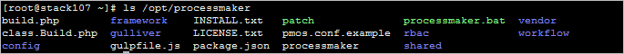
Set File Permissions
Issue the following commands as the root user so that ProcessMaker can access the necessary files in CentOS.
By default, the Apache or NGINX service runs as the apache or nginx user.
Therefore, the web service must own the ProcessMaker directory so that the web service can read and write the data. The -R option makes the ownership changes recursively so they apply to all the files and subdirectories within /opt/processmaker).
Use the following command to make the apache user the owner of all the ProcessMaker files:
Use the following command to make the nginx user the owner of all the ProcessMaker files:
After these changes, verify the permissions and owner of the processmaker directory with the command ls -l. Below is an example for the Apache web server. If using NGINX, it would show that all the ProcessMaker files are owned by nginx.
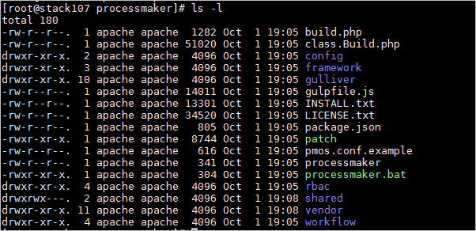
Step 3: Apache 2.4 Configuration
Note: If the NGINX stack is installed in the server, skip this step and go to Step 4: NGINX Configuration.
Copy the sample ProcessMaker configuration file to Apache's conf.d directory:
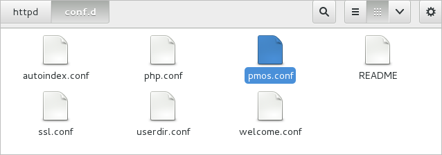
Edit the pmos.conf file to fit your environment:
Refer to the following sections that pertain to Apache configurations:
VirtualHost in Apache with SSL
Use the following VirtualHost configuration. In the pmos.conf file, replace your_ip_address and your_processmaker_domain with the IP address or domain name used by your ProcessMaker server:
The port 443 is for HTTPS exclusive use.
Replace your_ip_address with the IP number or domain name of the server running ProcessMaker. If you only planning on running and accessing ProcessMaker on your local machine, then use the IP address "127.0.0.1". If using ProcessMaker on a machine whose IP address might change (such as a machine whose IP address is assigned with DHCP), then use *, which represents any IP address. To use a port other than port 80, then it is also necessary to specify the port number.
If your DNS or /etc/hosts has a defined domain for ProcessMaker, then use that domain for your_processmaker_domain. Otherwise, use the same IP address for your_processmaker_domain as was used for your_ip_address. For more information, see the Apache Virtual Hosts Documentation.
Note: It is also possible to define the virtual host for ProcessMaker in the Apache configuration by inserting the above VirtualHost definition into the file /etc/httpd/conf/httpd.conf.
After editing the pmos.conf file, restart Apache.
Example 1:
ProcessMaker is installed in the /opt/processmaker directory and is running on a server at the address 192.168.1.100:
Example 2:
ProcessMaker is installed in the /home/fred directory on your local machine at port 8080 with a dynamic IP assigned by DHCP:
Example 3:
ProcessMaker is installed in the /opt/pm3.2.3 directory at the IP address 123.45.67.89 and the domains www.example.com and any variant of X.example.com:
Note that www.example.com and *.example.com need to be defined in the server's DNS or the /etc/hosts file for this example to work correctly.
VirtualHost in Apache without SSL
Use the following VirtualHost configuration. In the pmos.conf file, replace your_ip_address and your_processmaker_domain with the IP address or domain name used by your ProcessMaker server:
Replace your_ip_address with the IP number or domain name of the server running ProcessMaker. If you only planning on running and accessing ProcessMaker on your local machine, then use the IP address "127.0.0.1". If using ProcessMaker on a machine whose IP address might change (such as a machine whose IP address is assigned with DHCP), then use *, which represents any IP address. To use a port other than port 80, then it is also necessary to specify the port number.
If your DNS or /etc/hosts has a defined domain for ProcessMaker, then use that domain for your_processmaker_domain. Otherwise, use the same IP address for your_processmaker_domain as was used for your_ip_address. For more information, see the Apache Virtual Hosts Documentation.
Note: It is also possible to define the virtual host for ProcessMaker in the Apache configuration by inserting the above VirtualHost definition into the file /etc/httpd/conf/httpd.conf.
After editing the pmos.conf file, restart Apache.
Example 1:
ProcessMaker is installed in the /opt/processmaker directory and is running on a server at the address 192.168.1.100:
Example 2:
ProcessMaker is installed in the /home/fred directory on your local machine at port 8080 with a dynamic IP assigned by DHCP:
Example 3:
ProcessMaker is installed in the /opt/pm3.2.3 directory at the IP address 123.45.67.89 and the domains www.example.com and any variant of X.example.com:
Note that www.example.com and *.example.com need to be defined in the server's DNS or the /etc/hosts file for this example to work correctly.
Step 4: NGINX Configuration
Note: If Apache is installed in the server, skip this step and go to Step 5: Install ProcessMaker.
Note: NGINX configuration is for ProcessMaker 3.2.2 and later only.
Create a configuration file inside /etc/nginx/conf.d/ with the command:
In order to configure this file to do one of the following steps:
VirtualHost in NGINX with SSL
If using an SSL certification, follow these steps to do the configuration of NGINX:
1. In the created file the configuration file should be as follows:
2. On the same file, change the server_name attribute with the IP of your server as an example:
3. Reset the nginx server:
VirtualHost in NGINX without SSL
If the server does not an SSL certification, the following configuration must be used:
1. In the created file processmaker.conf the configuration file should be as follows:
2. On the same file, change the server_name attribute with the IP of your server as an example:
3. Reset the nginx server:
Step 5: Install ProcessMaker
After all stack configurations are complete, open a web browser and enter the IP address (and port number if not using the default port 80) where ProcessMaker is to be installed. For instance, if ProcessMaker is to be installed at the address 192.168.10.100, then go to:
If it is installed locally at port 8080, go to:
Then, in the web browser, use the installation wizard to complete the ProcessMaker installation.
Pre-Installation Check
The first screen of the installation wizard checks whether the server meets the requirements to install ProcessMaker.
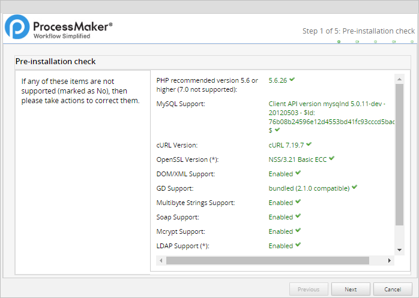
Where in the Pre-installation Check screen, the PHP recommendation message displays:
- For ProcessMaker 3.2.3 and earlier: "PHP recommended version 5.6 or higher (7.0 not supported)"
- For ProcessMaker 3.3.0 and later: "PHP recommended version 5.6 or higher, 7.2 is not yet supported"
- For ProcessMaker 3.4.0 and later: "PHP recommended version 7.1 or higher, PHP 7.2 is not yet supported"
- For ProcessMaker 3.4.4 and later: "PHP recommended version 7.3, we maintain compatibility starting with PHP 7.1"
This screen checks the versions of PHP, MySQL, and cURL and ensures that the necessary PHP modules are enabled and the PHP memory_limit is at least 80MB. Requirements that are not met will be marked as No. Fix any missing requirements before continuing with the installation.
When all requirements are met, click Next.
File Permissions
The second screen of the installation wizard lists the paths of the directories where ProcessMaker stores its files and checks whether those directories have the correct file permissions.
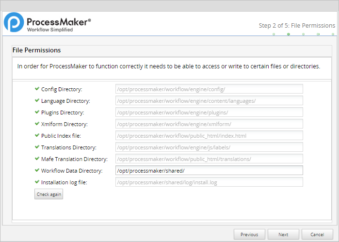
If there is a problem accessing some files or directories, check to make sure the file permissions of the directories are set, so the web server administrator user running ProcessMaker can access them, then click the Check again button to refresh the list.
It is possible to change the location of the shared directory, where files containing process and case data are stored. This directory is placed inside the ProcessMaker installation directory under shared by default, but it can be placed in another location or on a Network Address Translation (NAT) server. If the default location for the shared directory is not used, make sure that the chosen location has the proper file permissions so that it can be accessed by ProcessMaker, but is still restricted from normal users on the server who shouldn't have access to sensitive files. It is recommended to regularly back up the shared directory and MySQL files to prevent data loss.
When file permissions are properly set, click Next.
ProcessMaker Open Source License
The third screen of the installation wizard displays the ProcessMaker license.
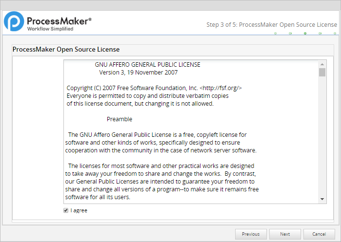
Mark the option I agree and click on Next to continue the installation.
Database Configuration
The fourth screen of the installation wizard configures the connection to the MySQL database. The Next button remains disabled until all database configuration fields contain values. Follow these steps to configure the MySQL database connection:
1. Select the database engine that you are using, in this case, it would be MySQL.
2. Enter the hostname in the Host Name field. If connecting to the local machine, use localhost.
3. Enter the port which the database is going to use.
4. Enter the root user’s username and password to the MySQL database in the User Name and Password fields, respectively.
5. Click Test Connection to verify the connection to the database. If the ProcessMaker install wizard cannot connect to the MySQL database for any reason, an error message displays.
6. After you have verified the connection, click Next.
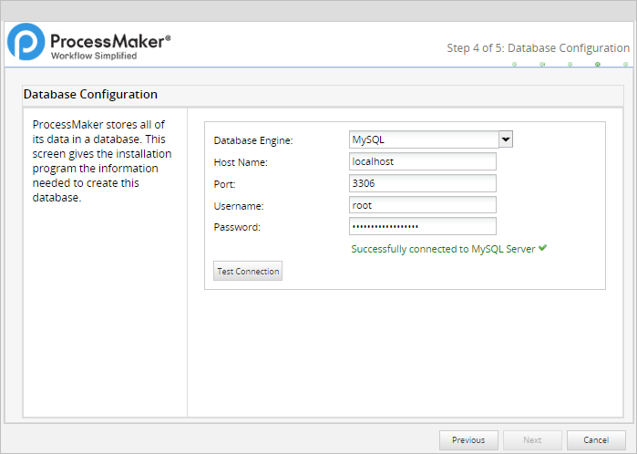
Workspace Configuration
The last screen of the installation wizard is to configure the username and password of the Administrator user, which are both "admin" by default.
The ProcessMaker workspace and its database can also be configured in this step.

Follow these steps to configure the workspace name and Administrator user:
Enter the workspace name in the Workspace Name field, it only allows alphanumeric characters and no more than 29 characters long.
Enter the name of the First user, by default is “admin”, this user will have all the permissions.
Provide the password for the admin user.
Important! The “admin” user will be able to access all the features and functionalities in the ProcessMaker installation, such as system configuration, process creation, editing, users and groups management, case management, and report and dashboard oversight, among others. Thus, it is strongly recommended to create a strong password for this account. Take a look at this list of password dos and don’ts. Also, consider using a strong password generator like this one.
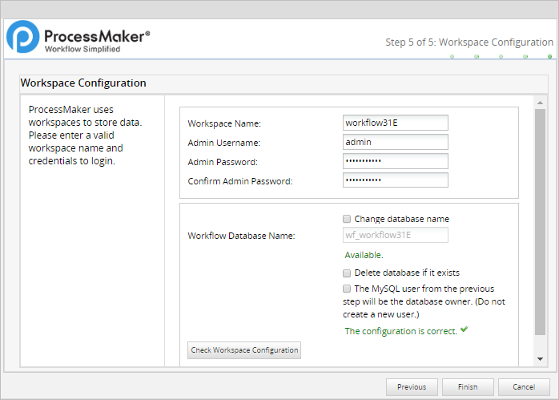
Follow these steps to configure the workspace database:
1. Provide a new name for the Workflow Database Name, by default is the same name as the workspace with a “wf_” at the beginning, to do this it is needed to check the Change database name option.

If the database name already exists you can delete it and recreate the same but clean by checking the Delete database if it exists option.
By default, the installation wizard creates a new MySQL user who is granted access to a new database named "wf_workflow" that will store ProcessMaker data. To use the existing MySQL user instead of creating a new user, mark the Use the current user as the database owner option.
2. Click Check Workspace Configuration to verify the configuration settings are correct. One or more errors displays if there are settings that cannot be used If that is the case, the error will explain where the error is, the most communes are the following:
a. Not passed: This warning displays when the database name already exists, it also displays this warning “WARNING: Database already exists, check “Delete Databases if exists” to overwrite the existing databases.”
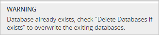
b. Please enter a valid Workspace Name / Admin Username / Workflow Database Name: This warning displays when there is an invalid character or the name is too long and needs to be changed.
c. The password confirmation is incorrect: This warning displays when the passwords provided are not the same.
3. After you configure the workflow, click Check Workspace Configuration and if all correct click Finish.

If there are no problems, the message "ProcessMaker was successfully installed" will be displayed.
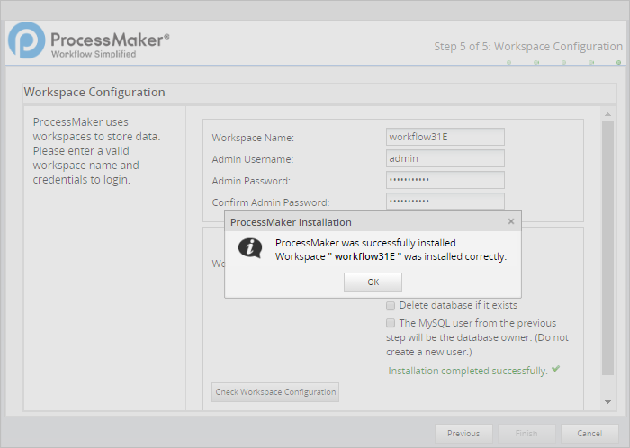
If there was a problem creating the database an error message will be displayed. In this case, check the configuration of MySQL and its my.cnf file.
If there was a problem writing the ProcessMaker files, change the file permissions of the directories to give Apache access.
First Login
After ProcessMaker has been successfully installed, the web browser will be redirected to the login page.
The Welcome to ProcessMaker screen:
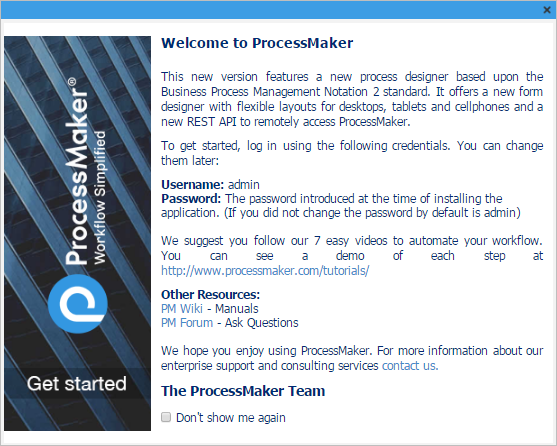
To avoid seeing the Welcome to ProcessMaker screen on every subsequent login, mark the option Don't show me again.
Follow these steps to log into ProcessMaker:
Enter the username and password of the Administrator user, which is "admin" by default.
Select the language you prefer.
Click on Login to enter ProcessMaker.
The workspace is automatically loaded.
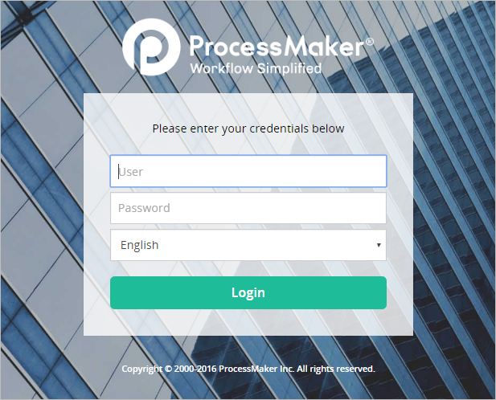
The login page can be customized. For more information see Login Settings.
Note: If a previous version of ProcessMaker was accessed by the web browser unintentionally, it is recommended to clear the browser cache after installing ProcessMaker to clear any stored pages from previous versions of ProcessMaker.
Errors During Installation
If an error occurs during the installation, check the installation log file:
File Locations
Depending on the errors found in the installation log file, check the following files:
The web server configuration file for Apache:
The web server configuration file for NGINX:
The ProcessMaker website configuration file for the web server with Apache:
The ProcessMaker website configuration file for the web server with NGINX:
The PHP configuration file:
The MySQL configuration file:
The ProcessMaker configuration file where the components are installed:
The ProcessMaker configuration file for database connections:
The ProcessMaker redirection to the login screen:
If the following error appears at the login screen:
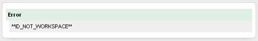
This error indicates that the installer was unable to access the MySQL databases to install the translations. Make sure that the MySQL port (which is 3306 by default) isn't blocked by a firewall and MySQL is configured to accept connections from the server running ProcessMaker.
Apache Possible Configuration Issues
Refer to the following sections that pertain to possible Apache configuration issues:
Setting Apache as a Service
If Apache is not already running as a service, then configure it to automatically start as a service when booting up:
No ServerName Warning
If a warning message similar to the one below appears when restarting Apache:
Then, the ServerName needs to be set for Apache. Edit the httpd.conf file and add the line:
For instance, if running ProcessMaker from a local machine, then:
Non-Standard Port
If running ProcessMaker on a port other than the default port 80, add the following line to the httpd.conf file:
For instance, if running ProcessMaker from a local machine at port 8080:
Or simply:
Note: If Apache is using the default port 80, then configure other programs to not use port 80. Check whether a program is currently listening on port 80 with the command:
MySQL Possible Configuration Issues
Refer to the following sections regarding possible MySQL configuration issues:
Setting the root Password
If MySQL doesn't have a root password, set one for better security:
If you have forgotten the root password, see these instructions to reset it.
Starting as a Service
When logging into MySQL, if the following error message appears:
Then MySQL needs to be started as a service:
If MySQL was installed from its RHEL/CentOS package, it should automatically start as a service if the server reboots. If not, then use chkconfig to add it as a service:
MySQL Password with Special Characters
The following error is displayed during the ProcessMaker installation when the MySQL password contains a character that is not a letter or a number, like @ # $ % ^ & ( /.
Please change/reset your MySQL password and try to install ProcessMaker again. This is a known issue.
Additional ProcessMaker Configurations
Additional aspects of ProcessMaker may need to be configured. See Additional Server Configuration and the Administration sections. Most ProcessMaker installations need the following settings to be configured:
Setting the Time Zone
The default time zone for the ProcessMaker server can be set by logging into ProcessMaker with the "admin" user and going to Admin > Settings > System. Another way to set the time zone is to edit the env.ini configuration file.
Configuring Email
To send out email notifications or allow users to recover forgotten passwords via email, then see Email - Settings to configure ProcessMaker to use an email server.
Execution of cron.php
To use email notifications or timer events, configure the server running ProcessMaker to periodically execute the cron.php file. See Executing Cron Scripts.
Installation of phpMyAdmin
In addition, phpMyAdmin can be installed to easily view the MySQL databases used by ProcessMaker inside a web browser. To do so use the following command:
For some versions of RHEL/CentOS, phpMyAdmin will need to be manually installed.